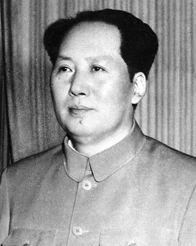

Ideologies / Radical Left
What is Maoism?
Maoism is a political ideology in the Radical Left family. It adapts Marxism Leninism to an agrarian country by making the peasantry the main revolutionary force. The party is meant to draw its line from the masses and return it to them, and to keep class struggle going even after taking power. It is openly hostile to inherited tradition and treats armed struggle as the road to power.
Peasant revolution, the mass line, protracted people's war.
Defined from: Mao Zedong, On New Democracy (1940)
See how close you are to Maoism Dare a friend to answer as one

(2).jpg){kind=link}
Where Maoism stands on 13 axes
Each axis runs from 0 to 100. A score of 50 is the middle. On a classic compass it sits in the Authoritarian Left quadrant.
| Axis | Position | Score | In words |
|---|---|---|---|
| EconomyMarket to Planned | 95 | Very strongly Planned | |
| OwnershipPrivate to Collective | 100 | Very strongly Collective | |
| RightsLiberty to Security | 95 | Very strongly Security | |
| GovernmentDemocracy to Autocracy | 85 | Very strongly Autocracy | |
| StructureDecentralised to Centralised | 75 | Strongly Centralised | |
| NationInternationalist to Nationalist | 60 | Leans Nationalist | |
| ImmigrationMulticulturalist to Assimilationist | 60 | Leans Assimilationist | |
| ValuesProgressive to Traditional | 15 | Very strongly Progressive | |
| TechnologyAccelerationist to Precautionary | 45 | Balanced | |
| EnvironmentIndustrialist to Environmentalist | 15 | Very strongly Industrialist | |
| ReligionSecular to Religious | 0 | Very strongly Secular | |
| MilitaryPacifist to Militarist | 90 | Very strongly Militarist | |
| TradeFree Trade to Protectionist | 92 | Very strongly Protectionist |
Ideologies closest to Maoism
- Castroism83% alike
- Hoxhaism82% alike
- Marxism Leninism81% alike
- Sankarism81% alike
- Stalinism79% alike
Its opposite on this map is Agorism, at 18%.
Parties near Maoism
Communist Party of China of 1940 (China) was the first party or movement to carry it, placed here from On New Democracy (1940).
- Communist Party of the Soviet UnionSoviet Union. Programme of the Communist Party of the Soviet Union (1961)79% alike
- BolsheviksRussia. Programme of the Russian Communist Party (1919)78% alike
- Communist Party of CubaCuba. Conceptualización del Modelo Económico y Social Cubano (2021)77% alike
- Workers' Party of Korea of 1967North Korea. Let Us Embody the Revolutionary Spirit of Independence (1967)76% alike
Common questions
What is Maoism?
Maoism is a political ideology in the Radical Left family. It adapts Marxism Leninism to an agrarian country by making the peasantry the main revolutionary force. The party is meant to draw its line from the masses and return it to them, and to keep class struggle going even after taking power. It is openly hostile to inherited tradition and treats armed struggle as the road to power.
What does Maoism believe?
In one line: Peasant revolution, the mass line, protracted people's war. Its strongest positions are Collective, Secular, Planned. It adapts Marxism Leninism to an agrarian country by making the peasantry the main revolutionary force. The party is meant to draw its line from the masses and return it to them, and to keep class struggle going even after taking power. It is openly hostile to inherited tradition and treats armed struggle as the road to power.
Who founded Maoism?
Maoism is defined here from On New Democracy (1940) by Mao Zedong. The thinker most tied to it is Mao Zedong (1893 to 1976).
Is Maoism left wing or right wing?
On a classic two axis compass Maoism falls in the Authoritarian Left quadrant, which means the economic left and the authoritarian side. Left and right hide a lot, though, which is why EthosScales scores it on thirteen separate axes.
How is Maoism different from Castroism?
They are close: 83% alike. The biggest gaps are on Trade, where Maoism scores 92 and Castroism scores 65, and Rights, where Maoism scores 95 and Castroism scores 75. On each axis, 0 is one end and 100 is the other.
Think this is wrong? Suggest a correction. The scores are editorial estimates.